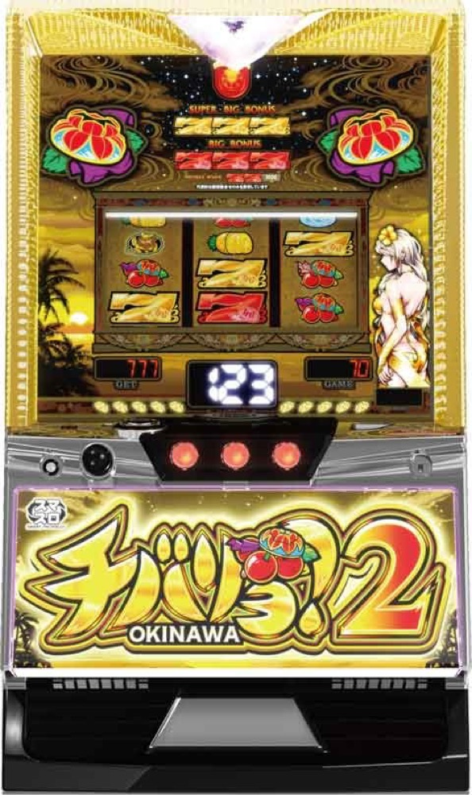

チバリヨ2
チェリー回数とモードから花笠点灯へ。天国・パトランプを目指す。
- 導入
- 2024年3月
- メーカー
- ネット
- 分類
- パチスロ
主要スペック
擬似チェリーと規定ゲーム数でボーナスを抽選し、32G連と高継続モードを狙うスマスロです。
- 設定1初当り約1/328.0
- 設定6初当り約1/224.8
- 純増約3.0・4.5枚/G
チバリヨ2の見どころと計算条件
擬似チェリーと規定ゲーム数でボーナスを抽選し、32G連と高継続モードを狙うスマスロです。
チバリヨ2を数字で早分かり
チェリー前兆から花笠ボーナス、リミットレスまでの流れと、設定ごとの結果差を固定レートで比較できます。
実機搭載の5段階設定
設定1・2・4・5・6から均等抽選し、設定3は対象外です。初当りは約1/328.0〜約1/224.8です。
設定1のベース約27.9G/50枚と公開出玉率97.3%〜114.9%を使用します。
天国とパトランプ
REG約90枚、BIG約210枚、SBIG約315枚から32G以内の連チャンを狙います。
シミュレーターでは天国の継続率66%・75%・80%を段階的に反映し、6連目のパトランプ昇格抽選、10連目の赤パトモード、15連目の虹パトモードを節目として表示します。赤パトは約88%、虹パトは約92%継続の代表値です。
15連後に終了した場合はリミットレスモードへ進みます。弱チェリー・強チェリー契機の1G連は各BONUSの振り分けへまとめ、チェリー天井や全モード移行は完全再現していません。
平均Gと投資目安の計算
掲載する花笠ボーナス初当り約1/328は設定1基準です。当サイトでは50枚あたり27.9G、1,000円46枚貸しの固定条件から、設定1基準の平均投資目安を約12,800円と計算します。
シミュレーターでは設定1・2・4・5・6を均等抽選します。設定1・2・4・5・6で公開されている初当り値を個別に使います。公開されていない特化ゾーン・上位到達率の設定差は加えません。 換金は5.2枚交換で固定し、結果とランキングに設定を表示します。
シミュレーション結果の見方
当るまでチェリー前兆・花笠ボーナスまでのゲーム数
設定設定1・2・4・5・6から抽選された今回の設定
上位到達パトランプ点灯とリミットレスへの到達
最終収支差枚と5.2枚交換の収支目安
結果は自動で「マイ記録」に保存され、同じ機種を何回試したか、最高収支、勝率をあとから確認できます。
簡易シミュレーターについて
チェリー前兆・花笠ボーナス・リミットレスの流れを固定条件で体験できます。JavaScriptを有効にすると、この位置にシミュレーター、演出、マイ記録、機種別ランキングが表示されます。
結果は娯楽・確率理解のための参考表示です。金銭的価値や交換価値はなく、実際の勝敗や収支を保証しません。18歳未満の方の利用はお控えください。
チバリヨ2のよくある質問
チバリヨ2はどんな台？
擬似チェリーと規定ゲーム数でボーナスを抽選し、32G連と高継続モードを狙うスマスロです。 設定1初当り約1/328.0が主な確認ポイントです。
チバリヨ2の平均投資目安は？
設定1基準の花笠ボーナス初当り約1/328と、50枚あたり27.9G・46枚貸しの固定条件から、平均12,800円を目安として表示します。実際の設定や遊技状況で結果は変わります。
設定とゲームの流れはどう抽選する？
開始時に設定1・2・4・5・6から1つを均等抽選し、チェリー前兆、花笠ボーナス、パトランプ点灯、リミットレスの順で到達を判定します。設定は最終結果とランキングに表示します。
収支はどう計算する？
1,000円46枚貸し・5.2枚交換の固定条件で投資、換金、収支目安を計算します。実店舗の再プレイ、持ちメダル、端数処理は含みません。